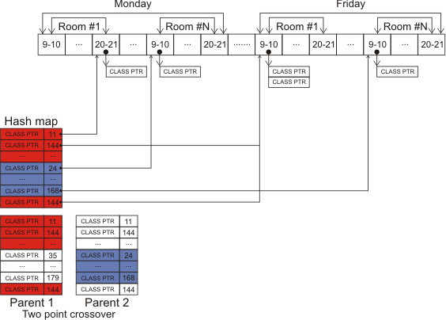
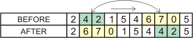
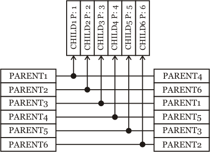

|
|
Define
Schedule Prototype
·
Number of
Crossover Points (Default value: 5). Concept is that you want chromosomes
during crossover a few points are combined.
Crossover
operation combines data in hash maps of two parent chromosomes, and then it
creates vector of slots according to content of new hash map. Crossover
'splits' hash maps of both parents in parts of random size. Number of parts is
defined by number of crossover points (plus one) in chromosome's parameters.
Then it alternately copies parts form parents to new chromosome, and forms new
vector of slots.

·
Mutation
Size (Default value: 5). This means that you want to mutation operate in how
many point of child chromosomes is doing.
Mutation
operation is very simple. It just takes class randomly and moves it to another
randomly chosen slot. Number of classes which are going to be moved in a
single operation is defined by mutation size in chromosome's
parameters.

·
Crossover Probability (Default value: 90%). Percent
probability for the crossover action of chromosomes, the number is between 1
to 100.
· Mutation Probability (Default value: 10%). Percent probability for the mutation action of chromosomes, the number is between 1 to 100.
Genetic
Algorithm Parameters
·
Number
of Chromosomes (Default value: 1000). Amount of chromosomes population in
Genetic Algorithm.
·
Replace by
Generation (Default value: 180). Means that the number of chromosomes in each
generation should be produced and will replaced.
Random Coupling operation takes the first parents
sequentially from the selection result set, and the second parents are chosen
randomly. If all parents are used as the first parents, but more children
should be produced, the operation restarts from the beginning until enough
children is produced.

·
Number of
Track Best Chromosomes (Default value: 50). Number of chromosomes that in
every generation the best chromosome (in terms of fitness value are elite) are
selected.
The fitness values are represented by single-precision floating
point numbers (float) in the range 0 to 1.